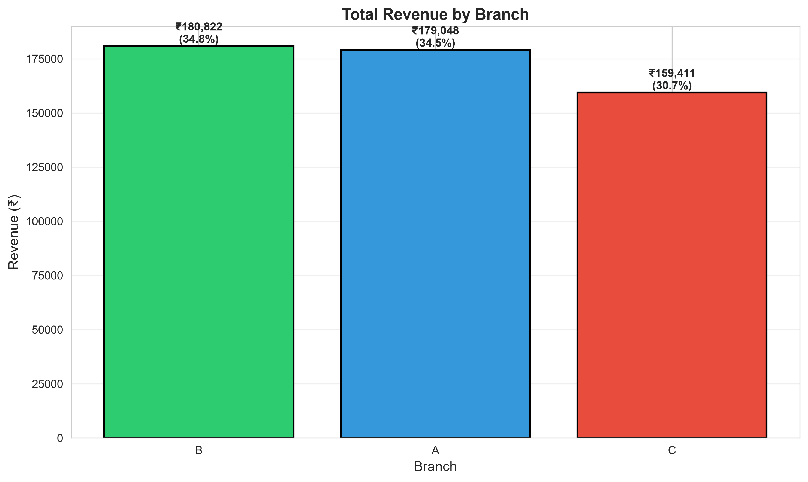
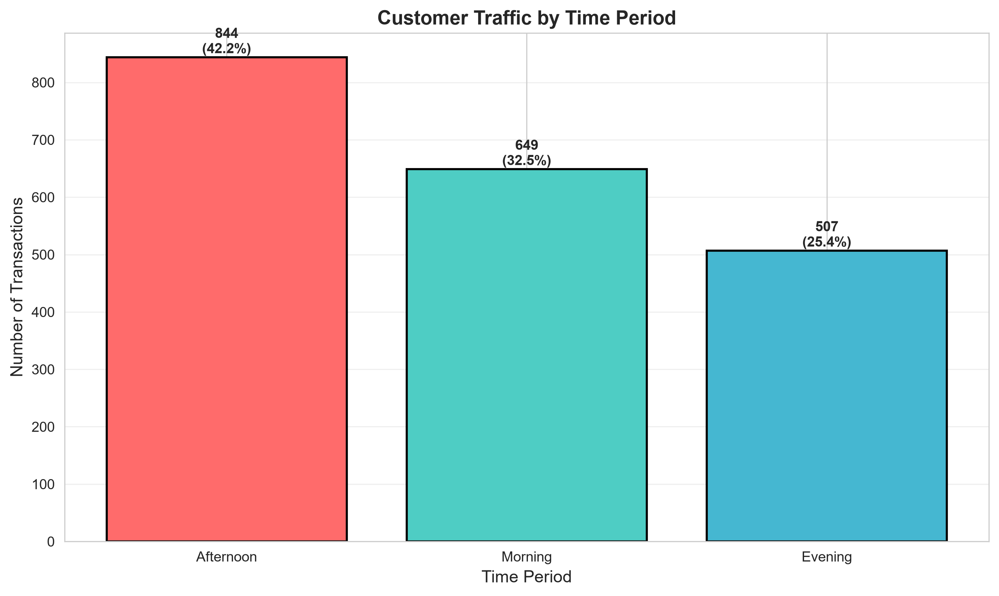
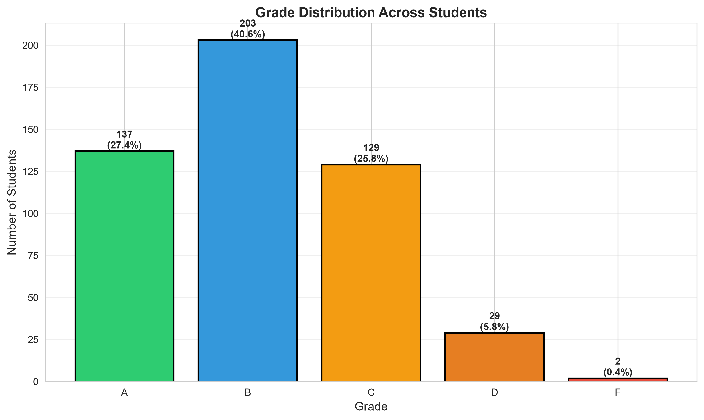
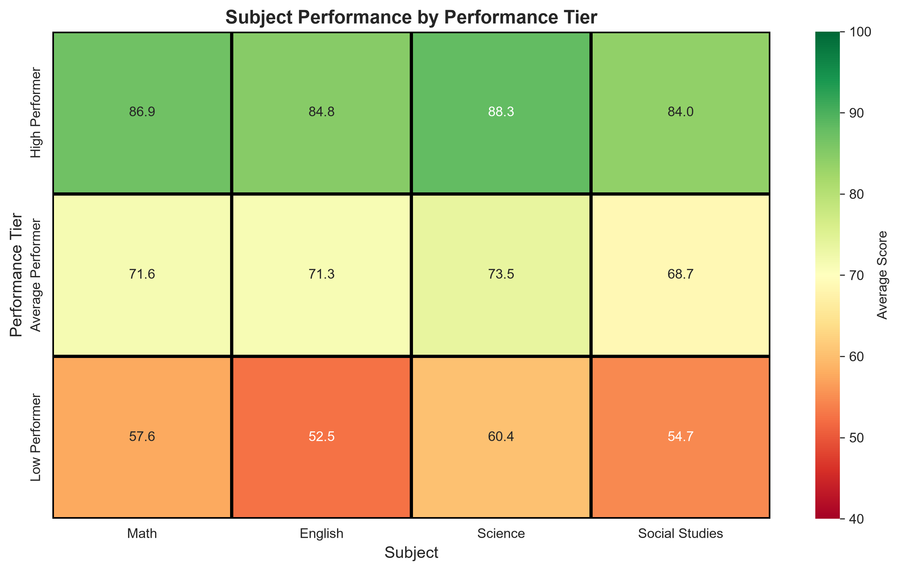
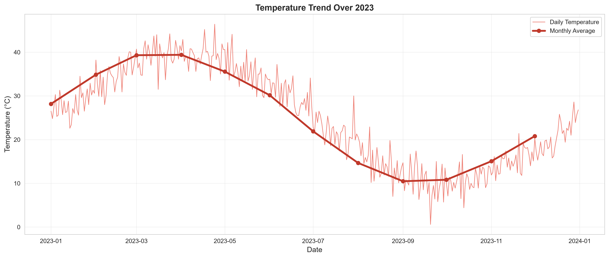
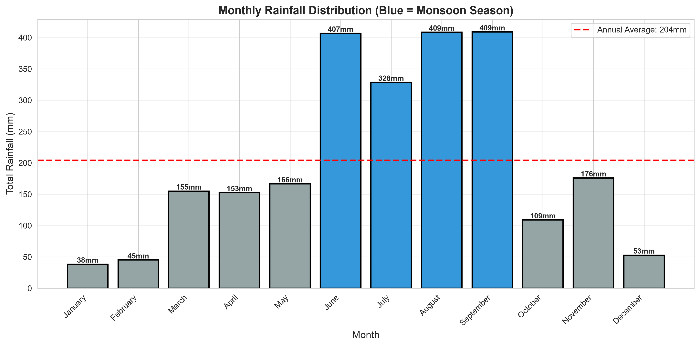
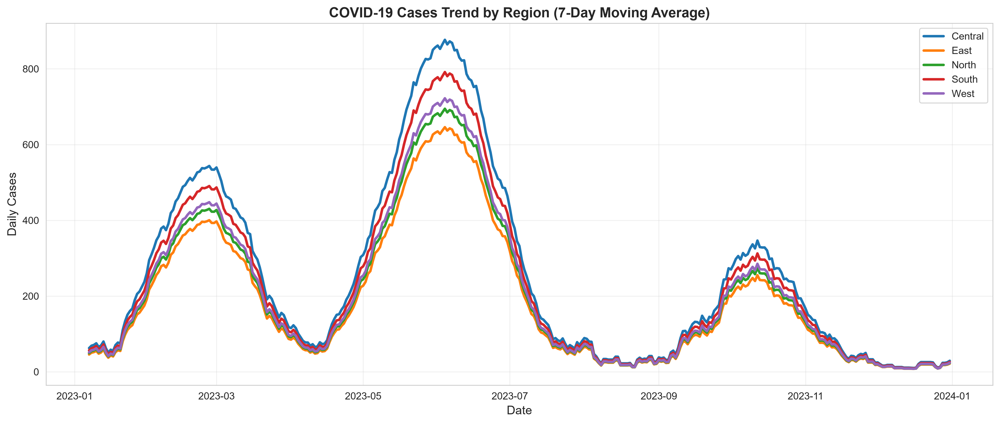
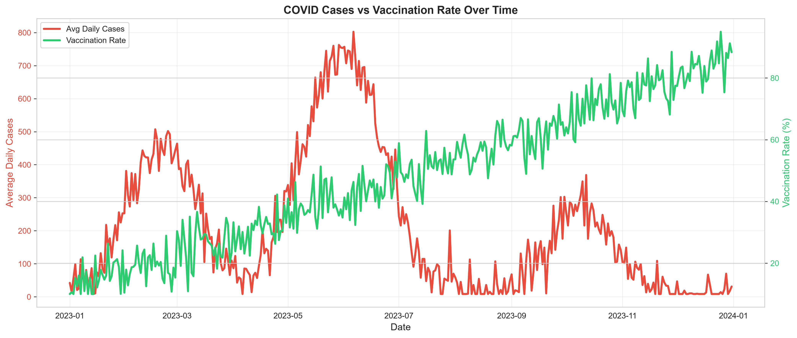
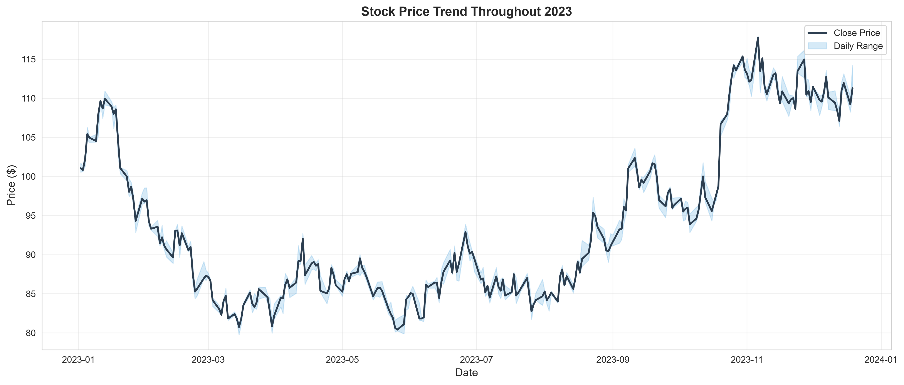
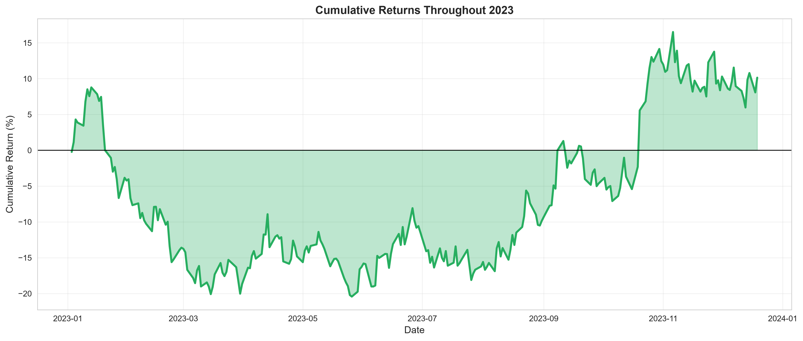

| Domain & Dataset | Core Analytical Question | Key Statistical Measures | Primary Visualizations | Decision Impact |
|---|---|---|---|---|
| 01 Supermarket (2,000 txns, 14 cols) |
What drives sales across branches, time periods, & customer segments? | Totals, branch shares, hourly volumes, mean/median ratings, spend parity | Grouped bars, distribution histograms, trend lines | Staffing shift to 12-5 PM peak; Branch C traffic investigation |
| 02 Student Scores (500 students, 10 cols) |
How do study time and attendance relate to grades and performance tiers? | Pearson r, tier averages, inter-subject correlation matrix, percentiles | Grade bar charts, subject heatmaps, effort grouped bars | Shift from counting study hours to assessing learning strategies |
| 03 Weather Data (365 days, 12 cols) |
What are the seasonal cycles, rainfall concentration, & extreme events? | Percentiles (10th/90th), annual precipitation, seasonal means & IQR | Time-series bands, monthly rainfall bars, seasonal boxplots | Rainwater storage for 64.7% rainfall concentration in 77 days; observed peak rainfall can inform drainage and rainwater-management planning |
| 04 COVID Healthcare (1,825 rows, 10 cols) |
What are periods of elevated case activity, regional disparities, & vaccine phase trends? | 7-day moving averages, CFR (1.15%), recovery rate (86.23%), phase means | Regional time series, dual-axis tracking, phase comparisons | Central region ICU capacity audit; targeted outreach for low-vax areas |
| 05 Stock Market (252 trading days) |
What are the asset return dynamics, price volatility, & risk-adjusted metrics? | Compounded return (10.14%), annualized vol (30.87%), drawdown, Sharpe | OHLC price trends, return histograms, drawdown profiles | Stress-test portfolios against -26.85% drawdown; reference $80-$85 |
Standardized handling of diverse data formats and dates, feature engineering (time-periods, moving averages), and structured data hygiene across all datasets.
Pre-flight shape assertions, missing value verification, duplicate detection, and explicit documentation of raw data anomalies without artificial distortion.
Rigorous application of central tendency, dispersion metrics, Pearson correlation matrices, and distribution profiling tailored to each domain.
22 analytical Matplotlib/Seaborn figures with consistent branding, readable labels, units, and clear analytical value.
Translating empirical patterns into testable operational adjustments while strictly avoiding causal claims from observational associations.
Automated pytest test suite with 18 passed tests, modular src/ architecture, pinned dependencies, and reproducible PDF reporting.